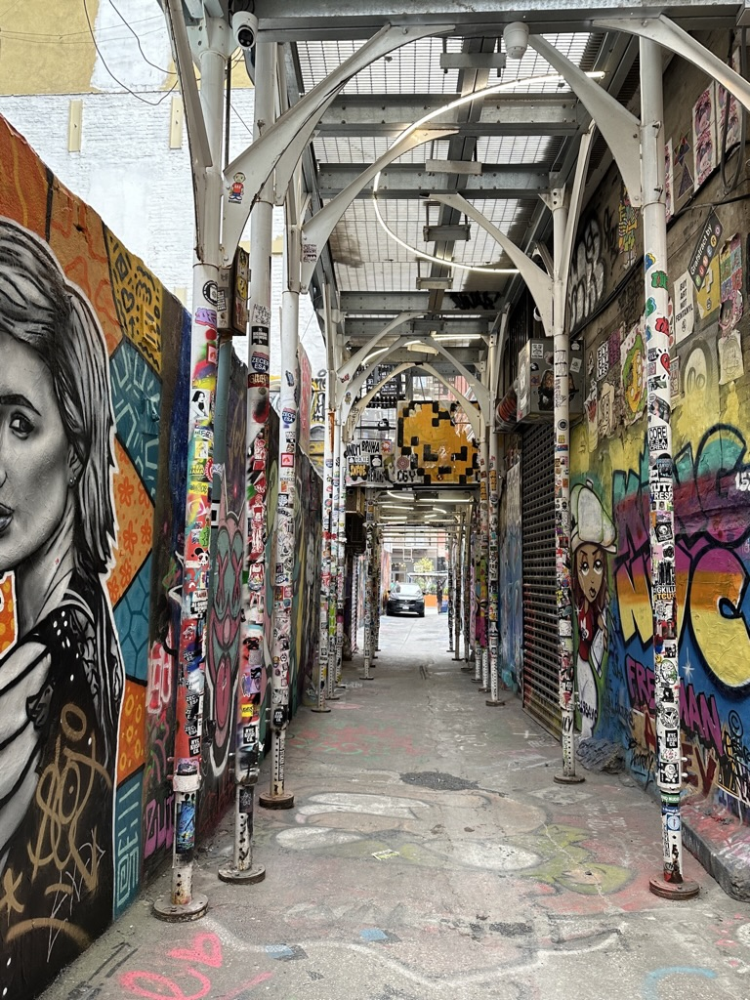
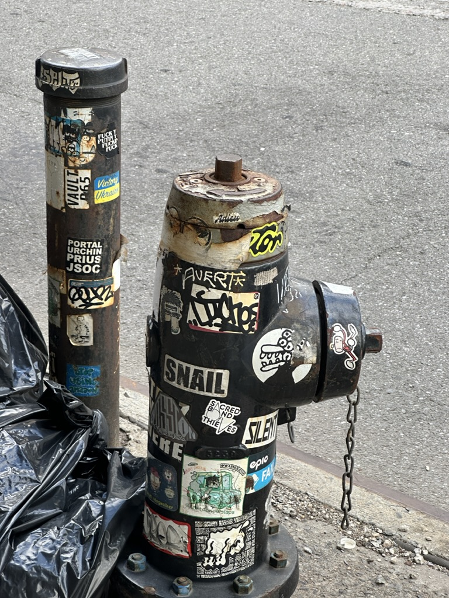
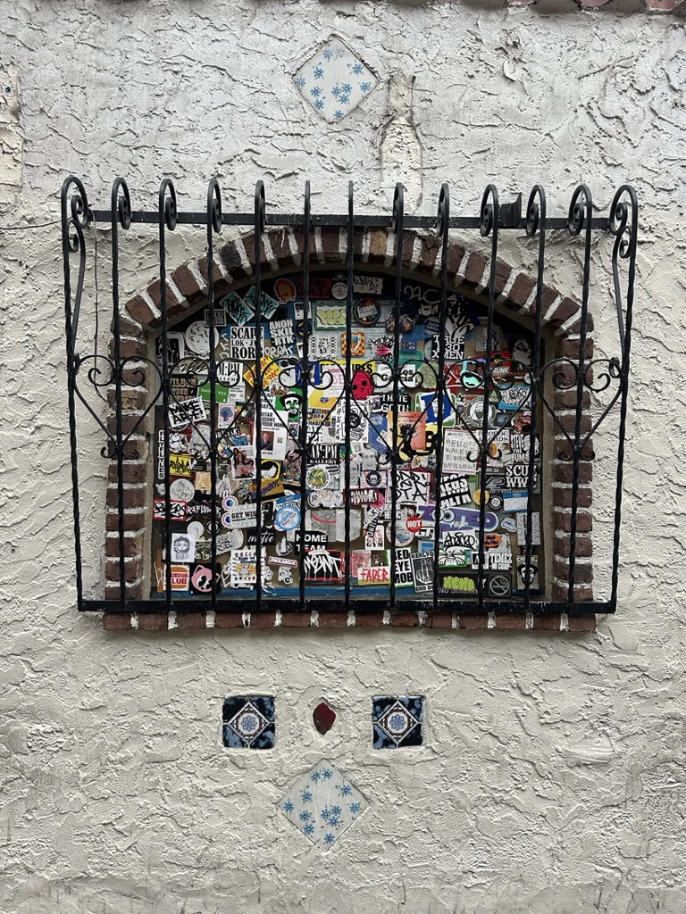
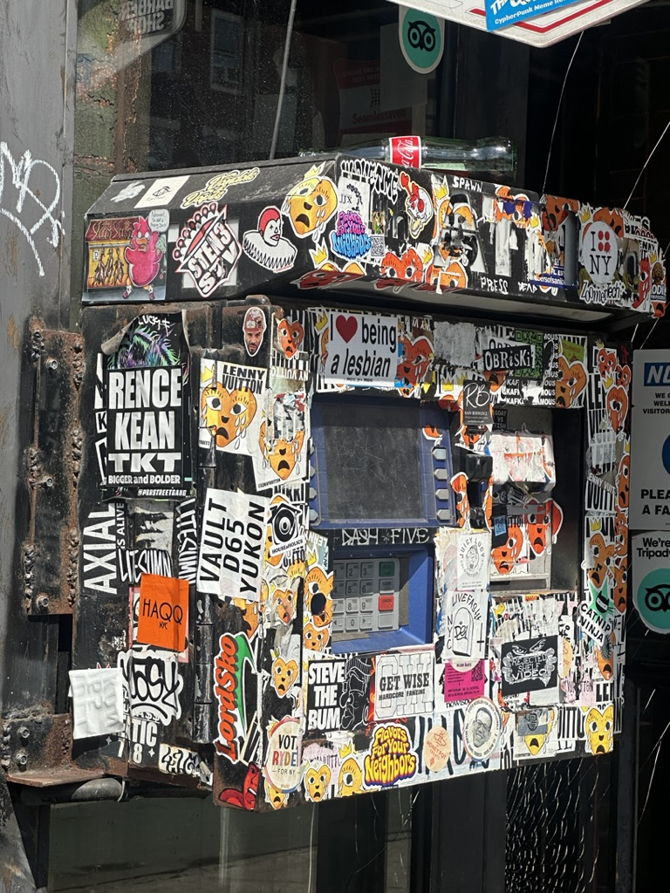
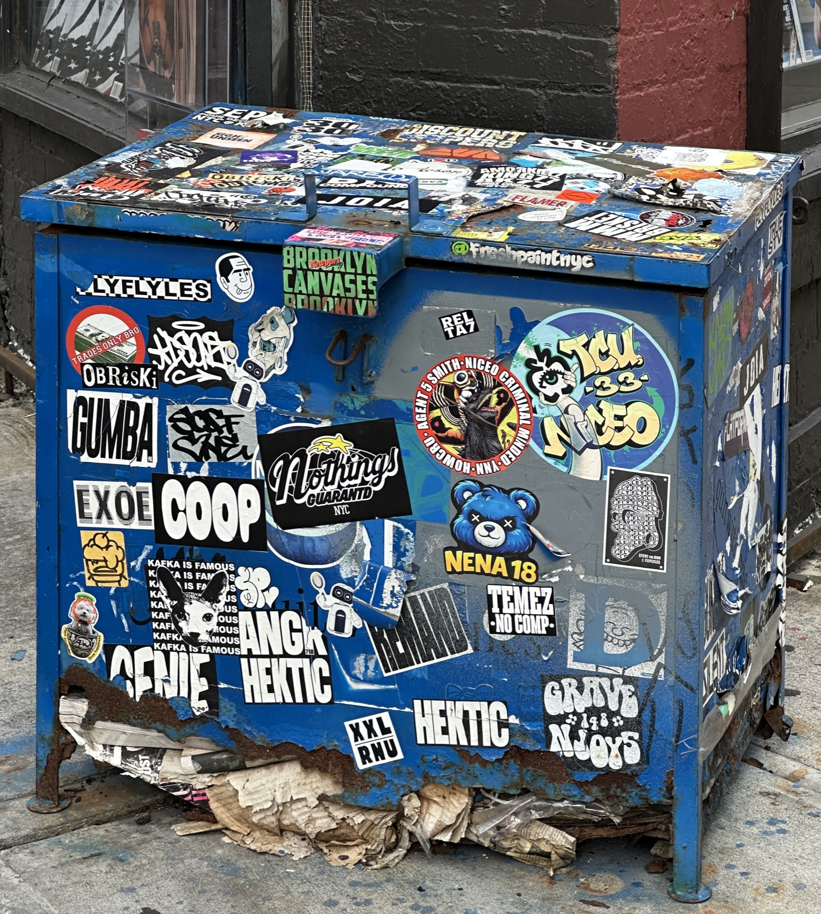

TAP A STICKER ON THE MAP
STICKER 02 · TAXI
NEIGHBORHOODS


01 · LOWER MANHATTAN
TRIBECA
Quieter and cleaner: fewer stickers, so each one stands out more.

02 · LOWER MANHATTAN
SOHO
Where street art meets shopping. Artist stickers sit next to brand ads on the same lamppost.

03 · WEST VILLAGE
W 4TH STREET
Around Washington Square Park and the basketball courts, student flyers and small art stickers fill every pole.

04 · EAST VILLAGE
ST. MARKS PLACE
The loudest poles in the city: punk, band and skate stickers layered so thick the metal disappears.

05 · BROOKLYN
WILLIAMSBURG
Artists' neighborhood. Stickers, slaps and murals on almost every corner around Bedford Avenue.